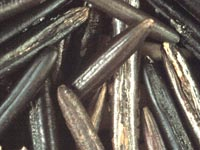

Wild rice (also known as water oat) is a native North American genus; Zizania. Wild rice is not a native Saskatchewan
crop. It was first introduced to the Northern Lakes as a food for muskrats
in the 1920s. The species which is commonly harvested (Z. palustris
L.), is found mainly in the Great Lakes regions of the United States and Canada. It grows in stands in the shallows of lakes and rivers of central and northern areas. For ten thousand years, the wild rice grain has been harvested for food. Wild rice is not actually rice, but
is a type of grass that grows annually from seed. It is sown in about a metre of water in the fall either by hand or with mechanized
seeders. Wild rice is also selfseeding. Ripe, unharvested seed often falls into the water and is transported naturally by
slow currents until it is deposited into natural, stream bottom seed beds. The seed can lie dormant up to four winters before
it germinates in the spring.
Mature wild rice plants can be about 2.5 m tall (from root to tip). Five or six long, ribbon-like leaves are supported on the main tiller. As many as 20
to 30 tillers may develop. The plant flowers from the middle of July through August and once physiological maturity is reached, the grain falls from the plant. Even though wild rice is an annual, enough seed is dropped and stands for the next year are assured. Kernels of mature, hulled grain (caryopsis) can range from 0.3 to 0.6 inches in length, and from 0.06 to 0.18 inches in diameter.

What is so good about wild rice?
Nutritionally, wild rice appears to have a
value greater than that for most cereals.
The grain has a high protein and carbohydrate content, and is very low in fat.
Wild rice protein has higher concentration of the essential amino acids lysine and methionine
than most cereals. The basic amino acid balance is comparable (slightly better) to oat groats, which is considered one of the better cereals for humans. Another good thing about wild rice
is that there is very little nutritional loss from processing wild rice.
What does it look like when I
use it?
Produced annually from seed, wild rice plants yield darkcoloured,
soft, nuttyflavoured kernels. Wild rice is used primarily
(and almost exclusively) for human food. Native stands provide a
food source for wildlife, including deer, moose, and muskrat and
wild fowl such as ducks and geese.
How is it harvested?
Seeds of wild rice shatter when mature and can be harvested several times if
non-destructive methods are used. Much of the present wild rice harvest in
Canada is done by native peoples from natural stands using traditional techniques.
The traditional method of harvesting is to press plants against the side of a canoe with a paddle,
leaving the plant intact and undamaged for later harvests. Mature grains are collected and then dried.
Until the 1980s, wild rice was harvested by this method. Today, mechanical beaters consisting of an airboat with
beater bars and a catch tray are used. New methods of harvesting
have helped increase wild rice production.
How much do we produce?
Saskatchewan has a small but an expanding
industry centered on wild rice. In 1970 only 40 kg of processed product were produced
(occupying 0.2 % of the market harvested from lakes and rivers), to 1987 when over 200,00kg
were produced (now a large 23% of that market). In the 1990 crop year,
about three hundred and fifty producers harvested over one million kilograms of wild
rice for sale to markets in the United States, Canada and Europe. Today, in 1998, there are about 160 producers
harvesting about 2.27 million kg of crop. Newly harvested wild rice has to be shipped to one of two processing plants
in the province. Here the rice is roasted and dehydrated, losing half its weight.
The wild rice industry is a risky business, dependent on sunny weather and correct water levels. Every few years the water levels in
northern lakes are too high and it swamps the crop. Several of the larger commercial wild rice producers are centred around La Ronge.
|